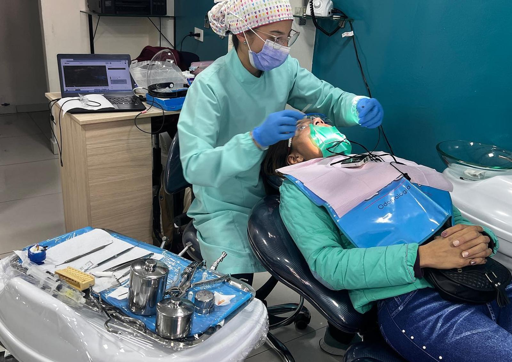
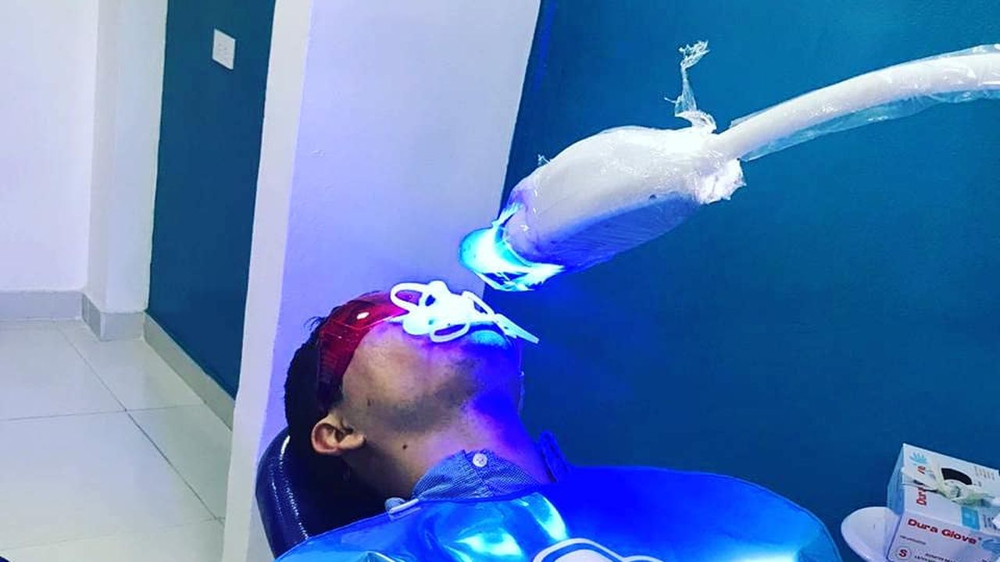
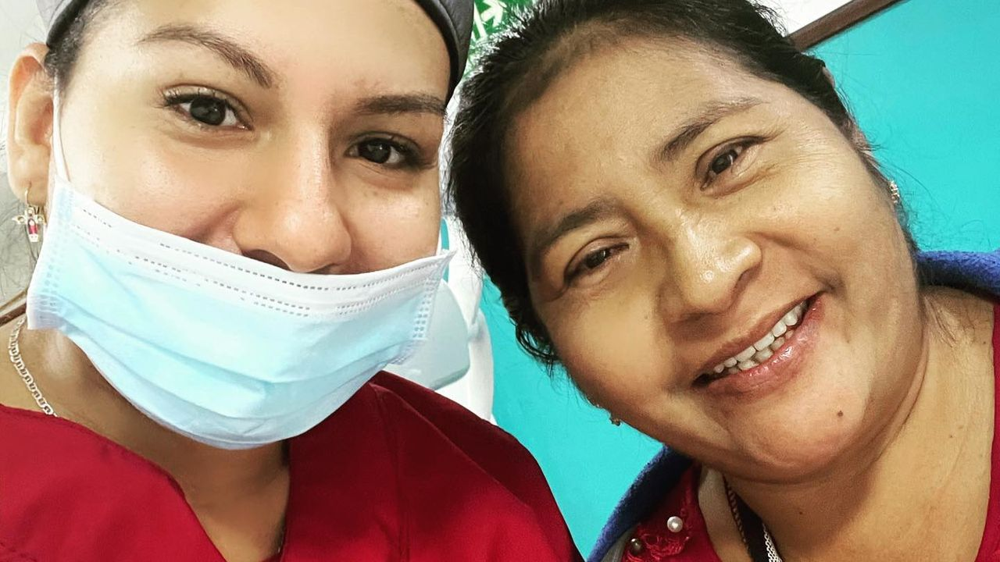
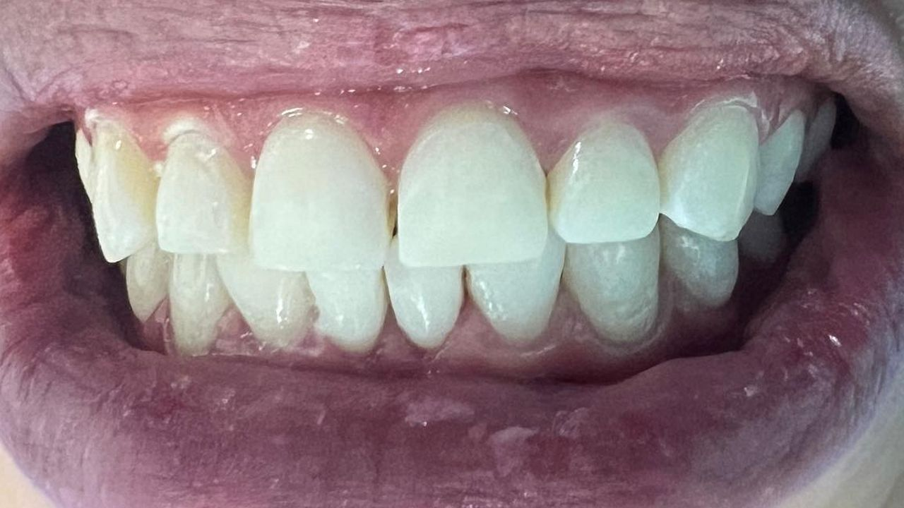
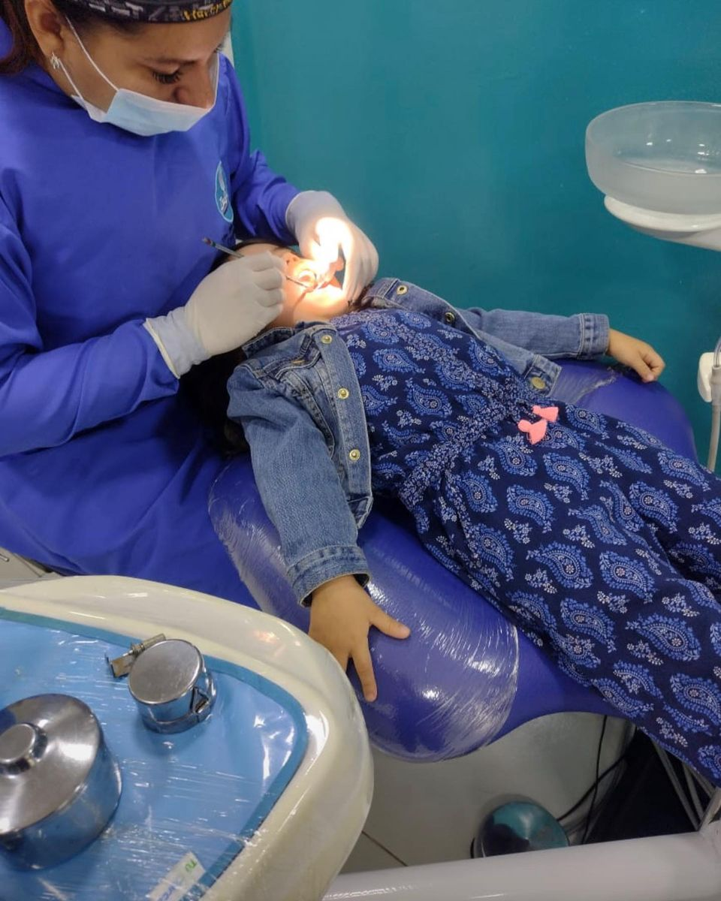
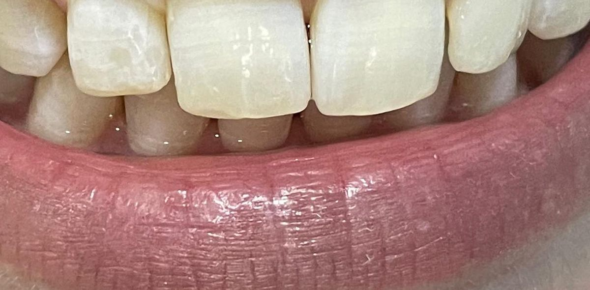
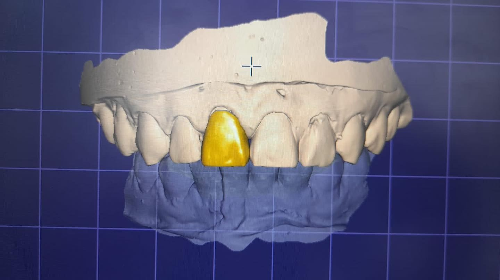
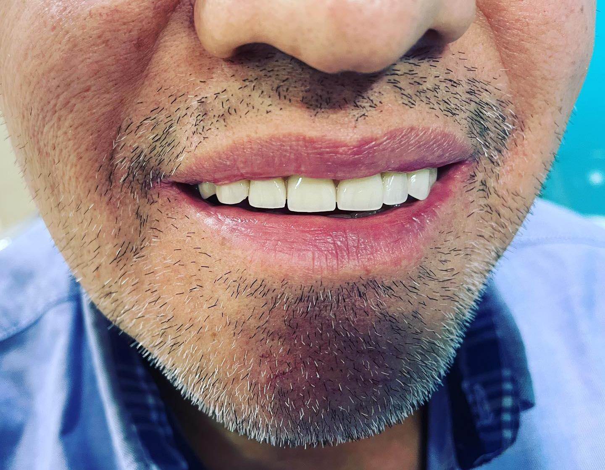
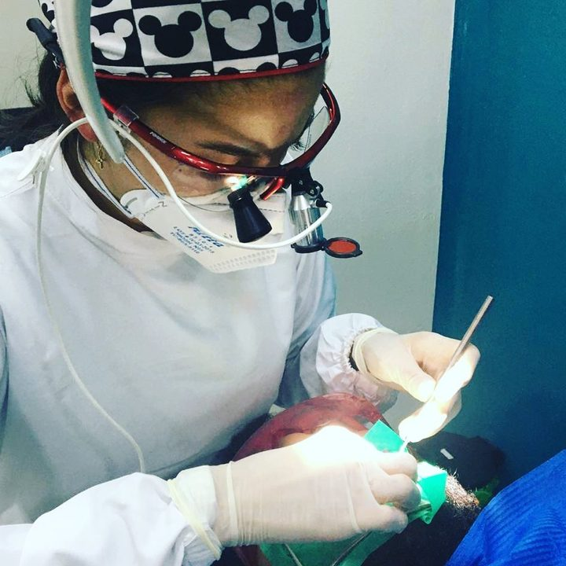
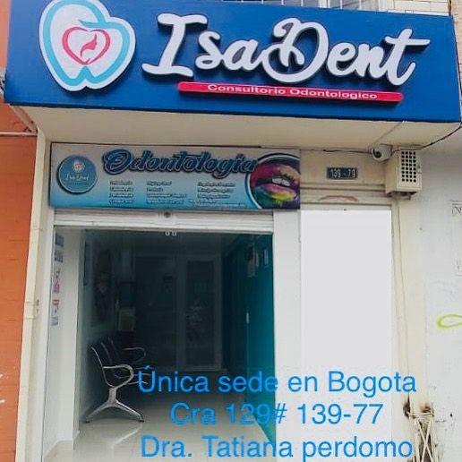

Evaluamos
Revisamos tu boca, tomamos radiografía periapical en el consultorio y te explicamos con calma lo que encontramos.
1 de 4



ISADENT es el consultorio de odontología especializada de la Dra. Tatiana Perdomo en Suba, Bogotá: ortodoncia, implantes y diseño de sonrisa, con anestesia sin dolor.
Mayerlis, Lina Marcela, Karen Lorena, Rosemberg, Vivi, Karen, Johanna, Juan Camilo, Violetta, Briguette, Lucas, Dayly, Zorayda, Viviana, Andy, Diana Carolina, Mile, Mireya, Edwin y Lorena.
Súper mi experiencia, mi hija ya tiene sus dientecitos un 80 % corregidos. Muchas gracias por su paciencia y por brindar sus conocimientos.


Aclaramiento con luz LED, carillas, coronas en zirconio y prótesis flexibles. Cada caso se planea antes de empezar: el diseño de sonrisa arranca con toma de fotos y un encerado, para que veas forma, color y tamaño.
Los trabajos se diseñan en computador con mínimo margen de error y se fabrican con laboratorios de confianza. Tú decides con el resultado a la vista.

Revisamos tu boca, tomamos radiografía periapical en el consultorio y te explicamos con calma lo que encontramos.
1 de 4
Estudiamos cada caso en 3D antes de empezar: la posición de un implante se decide en la pantalla, no a ojo.
2 de 4

Coronas, carillas y prótesis se diseñan en computador con mínimo margen de error, a la medida de tu boca.
3 de 4

Te entregamos tu tratamiento terminado y seguimos pendientes en cada control.
4 de 4

dirige ISADENT en Tibabuyes Universal, Suba. Sus pacientes repiten lo mismo: paciencia, explicaciones claras y trabajos bien terminados. Estudia cada caso, lo planea con escáner intraoral y diseño digital, y lo acompaña de principio a fin.
En el mismo consultorio atiende a niños y adultos: ortopedia y ortodoncia para los más pequeños, implantes, prótesis y diseño de sonrisa para quien quiere volver a sonreír, y aclaramiento con luz LED.
“Graciaspor lapaciencia
que tienescon mihijo”
Usamos anestesia computarizada: el anestésico entra de forma lenta y controlada, sin dolor durante la aplicación, y el resto del tratamiento es más tranquilo.
Sí. Tenemos crédito con Sistecrédito: sin cuota inicial y solo con tu cédula. También recibimos Nequi, transferencia y tarjetas Visa y Mastercard.
Sí. Hacemos odontología general para niños y adultos, y ortopedia maxilar para guiar el crecimiento de los más pequeños. Los papás destacan la paciencia de la doctora.
Sí. Lunes a viernes de 9:00 a. m. a 6:00 p. m. y sábados de 10:00 a. m. a 6:00 p. m. Los domingos el consultorio está cerrado.
Empieza con toma de fotos y un encerado de diagnóstico para que veas forma, color y tamaño antes de empezar. Luego vienen las carillas y una limpieza dental.
No hace falta. Tomamos radiografía periapical en el consultorio para ver el diente, sus raíces y el hueso que lo rodea.
Cuéntanos por WhatsApp qué necesitas y te ayudamos a elegir tratamiento, día y hora.

¿Prefieres llamar o venir?
318 258 9906 Cómo llegar en Google MapsCra. 129 #139-77, Tibabuyes Universal, Suba, Bogotá. Única sede.